Poverty and Inequality Platform (PIP):
An introduction using R and Stata
August 2026
Outline
Introduction to the Poverty and Inequality Platform (PIP)
PIP user interface
Accessing the PIP API with R and Stata
Exercises
Additional resources
1. Introduction
Poverty data at the World Bank
The World Bank mission is to end extreme poverty and boost shared prosperity on a livable planet.
To that end, the World Bank often helps countries field household surveys to track welfare.
Some countries do not receive assistance yet the Bank is granted access to the data through collaborations with the National Statistical Office.
For high-income countries, poverty data is sourced from the Luxembourg Income Study or EU-SILC.
The Poverty and Inequality Platform (PIP)
PIP is the source of poverty and inequality data for the World Bank.
PIP is the source of data for several targets of the Sustainable Development Goals on ending poverty (SDG1) and reducing inequality (SDG10).
PIP is the joint collaboration between different parts of the World Bank through the Global Poverty Working Group
- Development Data Group
- Development Research Group
- Poverty and Equity Global Department
PIP motivation
Scope: PIP is the World Bank’s data portal for poverty, prosperity, and inequality estimates.
Accessibility: PIP data is available through Application Programming Interface (API)
- User Interface (UI) – for quick data access and visualizations
- Stata and R wrappers – for advanced users, researchers, students
- Microdata access (for some surveys) through Microdata Online.
Open data, open code, reproducible research:
- PIP code is publicly available, and the PIP Methodology Handbook provides details on the poverty, prosperity, and inequality estimates reported in PIP.
- PIP typically is updated twice a year - Spring/Fall. One can, however, access various vintages of the data.
PIP: Transparency
All code necessary to create the poverty estimates are publicly available (https://github.com/PIP-Technical-Team)

PIP: Transparency
A description of the entire methodology is available in a technical handbook (https://datanalytics.worldbank.org/PIP-Methodology/)

Data release notes and other publications
Publications are available detailing the updates in each release, methodological assumptions, and other technical improvements (https://pip.worldbank.org/publication/)

Data on inequality
For each survey, PIP output reports inequality and shared prosperity measures like the Gini, MLD, polarization index, the decile share of income or consumption, and the Prosperity Gap.
In addition, PIP has a dedicated dashboard that visualize inequality trends and changes. This is available through the Further Data & Indicators page in PIP UI.
We also report the average and threshold income of each percentile for each survey. THis is also available through the Further Data & Indicators page in the PIP website.
Welfare measure reported in PIP
Acquiring Household Data
- Sources:
- LIC: Surveys collected by National Statistical Offices
- HIC:
- Europe: EU-SILC
- Other (and earlier years): Luxembourg Income Study (LIS)
- Data input type: welfare (consumption/income) data at the household or group level
Constructing Welfare Aggregates
- Income vs Consumption (welfare_type) -> consumption preferred.
- Bottom coding
- Micro or Grouped Data (distribution_type)
- Additional comparability considerations:
- Questionnaire design changes
- Equivalence scales (->not used)
- Spatio/temporal adjustments
- Tracked in PIP: comparable_spell and survey_comparability.
Adjusting Welfare Aggregates
- Consumer Price Indices (CPIs) & Purchasing Power Parities (PPPs)
- Derivation of the International Poverty Line (poverty_line)
- $3.00/day in 2021 PPP -> based on the median of harmonized national poverty lines from poorest countries
- Derivation of higher poverty lines
- $4.20 and $8.30 in 2021 PPP -> based on median values of national poverty lines of lower- and upper-middle income countries, respectively.
- Derivation of societal poverty line (spl) -> varies across countries in accord with the average estimated cost of meeting basic needs.
Calculating survey estimates
- Poverty and Inequality metrics are calculated using adjusted welfare aggregates.
- All methodology is available in the PIP Methodological Handbook on the website.
- Source code is available on github through the package
wbpip.
Calculating regional aggregates
- Extrapolations and/or Interpolations (fill_gaps)
- Nowcasts (nowcast)
- Regional classification
- Population adjustments
- Coverage rules applied
2. Accessing PIP through the user interface
3. Accessing PIP in R and Stata
Installation
# To install the pipr package, you first need to install the devtools package
install.packages("devtools")
# The devtools package allows you to install pipr through GitHub
devtools::install_github("worldbank/pipr")
# Now load pipr
library(pipr)
# I'll use dplyr a lot in these slides, so best to load it as well
library(dplyr)More information: https://worldbank.github.io/pipr/
More information: https://github.com/worldbank/pip/
Two main functions
get_stats(): country estimates of poverty and inequality- each row identifies a unique combination of country_code, year, reporting_level, and welfare_type
- reporting_level: Mostly national, but can be urban or rural
- welfare_type: Income or consumption
get_wb(): regional/global estimates of poverty and inequality- each row identifies a unique combination of region_code and year.
pip cl: country estimates of poverty and inequality- each row identifies a unique combination of country_code, year, reporting_level, and welfare_type
- reporting_level: Mostly national, but can be urban or rural
- welfare_type: Income or consumption
pip wb: regional/global estimates of poverty and inequality- each row identifies a unique combination of region_code and year.
Country-level estimates
# A tibble: 2,584 × 44
region_name region_code country_name country_code year reporting_level
<chr> <chr> <chr> <chr> <dbl> <chr>
1 Sub-Saharan Afri… SSF Angola AGO 2000 national
2 Sub-Saharan Afri… SSF Angola AGO 2008 national
3 Sub-Saharan Afri… SSF Angola AGO 2018 national
4 Europe & Central… ECS Albania ALB 1996 national
5 Europe & Central… ECS Albania ALB 2002 national
6 Europe & Central… ECS Albania ALB 2005 national
7 Europe & Central… ECS Albania ALB 2008 national
8 Europe & Central… ECS Albania ALB 2012 national
9 Europe & Central… ECS Albania ALB 2014 national
10 Europe & Central… ECS Albania ALB 2015 national
# ℹ 2,574 more rows
# ℹ 38 more variables: survey_acronym <chr>, survey_coverage <chr>,
# welfare_time <dbl>, welfare_type <chr>, survey_comparability <dbl>,
# comparable_spell <chr>, poverty_line <dbl>, headcount <dbl>,
# poverty_gap <dbl>, poverty_severity <dbl>, watts <dbl>, mean <dbl>,
# median <dbl>, mld <dbl>, gini <dbl>, polarization <dbl>, decile1 <dbl>,
# decile2 <dbl>, decile3 <dbl>, decile4 <dbl>, decile5 <dbl>, …version in use 20260324_2021_01_02_PROD
first observation
+------------------------------------------------------------------------+
| country_code year poverty_line headcount mean welfare_type |
|------------------------------------------------------------------------|
| AGO 2000 3.00 0.2695 8.3803 consumption |
+------------------------------------------------------------------------+
Click here to display how to cite
+--------------------------------------------------------------+
| count~de year welfare_~pe report~l headco~t gini |
|--------------------------------------------------------------|
1. | AGO 2000 consumption national 0.2695 0.5195 |
2. | AGO 2008 consumption national 0.2208 0.4272 |
3. | AGO 2018 consumption national 0.3929 0.5126 |
4. | ALB 1996 consumption national 0.0297 0.2701 |
5. | ALB 2002 consumption national 0.0419 0.3174 |
+--------------------------------------------------------------+Variables
Rows: 2,584
Columns: 44
$ region_name <chr> "Sub-Saharan Africa", "Sub-Saharan Africa", "Sub-…
$ region_code <chr> "SSF", "SSF", "SSF", "ECS", "ECS", "ECS", "ECS", …
$ country_name <chr> "Angola", "Angola", "Angola", "Albania", "Albania…
$ country_code <chr> "AGO", "AGO", "AGO", "ALB", "ALB", "ALB", "ALB", …
$ year <dbl> 2000, 2008, 2018, 1996, 2002, 2005, 2008, 2012, 2…
$ reporting_level <chr> "national", "national", "national", "national", "…
$ survey_acronym <chr> "HBS", "IBEP-MICS", "IDREA", "EWS", "LSMS", "LSMS…
$ survey_coverage <chr> "national", "national", "national", "national", "…
$ welfare_time <dbl> 2000.21, 2008.50, 2018.17, 1996.00, 2002.00, 2005…
$ welfare_type <chr> "consumption", "consumption", "consumption", "con…
$ survey_comparability <dbl> 0, 1, 2, 0, 1, 1, 1, 1, 2, 2, 2, 4, 2, 4, 3, 4, 3…
$ comparable_spell <chr> "2000", "2008", "2018", "1996", "2002 - 2012", "2…
$ poverty_line <dbl> 3, 3, 3, 3, 3, 3, 3, 3, 3, 3, 3, 3, 3, 3, 3, 3, 3…
$ headcount <dbl> 0.269546383, 0.220795824, 0.392947051, 0.02967841…
$ poverty_gap <dbl> 0.1191549532, 0.0666666645, 0.1629885084, 0.00439…
$ poverty_severity <dbl> 7.064835e-02, 2.902800e-02, 8.930591e-02, 1.17603…
$ watts <dbl> 0.1973895465, 0.0905210047, 0.2519774127, 0.00522…
$ mean <dbl> 8.380261, 7.401682, 6.218052, 8.442032, 8.628333,…
$ median <dbl> 5.300380, 5.334158, 3.879510, 7.419330, 7.117154,…
$ mld <dbl> 0.5094919, 0.3116315, 0.4763749, 0.1191043, 0.164…
$ gini <dbl> 0.5194515, 0.4271551, 0.5126429, 0.2701034, 0.317…
$ polarization <dbl> 0.4643389, 0.3913652, 0.4709815, 0.2412933, 0.268…
$ decile1 <dbl> 0.00990998, 0.02072270, 0.01334655, 0.03881788, 0…
$ decile2 <dbl> 0.02198698, 0.03356417, 0.02428161, 0.05279230, 0…
$ decile3 <dbl> 0.03341620, 0.04317617, 0.03332952, 0.06370657, 0…
$ decile4 <dbl> 0.04509489, 0.05302731, 0.04343721, 0.07524026, 0…
$ decile5 <dbl> 0.05646606, 0.06542599, 0.05582912, 0.08346224, 0…
$ decile6 <dbl> 0.07048204, 0.07923758, 0.06980908, 0.09245731, 0…
$ decile7 <dbl> 0.08817254, 0.09651189, 0.08869304, 0.10778961, 0…
$ decile8 <dbl> 0.1133977, 0.1229761, 0.1156761, 0.1261162, 0.119…
$ decile9 <dbl> 0.1593917, 0.1623416, 0.1593804, 0.1525077, 0.149…
$ decile10 <dbl> 0.4016820, 0.3230165, 0.3962174, 0.2071100, 0.253…
$ cpi <dbl> 0.006580985, 0.140636450, 0.571606031, 0.37247663…
$ ppp <dbl> 203.688736, 203.688736, 203.688736, 50.772305, 50…
$ pop <dbl> 16310860, 21996714, 31480496, 3168033, 3051010, 3…
$ gdp <dbl> 2172.463, 3559.195, 3196.790, 1683.770, 2297.109,…
$ hfce <dbl> NA, 1748.428, 2261.456, 1522.872, 1572.295, 1969.…
$ is_interpolated <lgl> FALSE, FALSE, FALSE, FALSE, FALSE, FALSE, FALSE, …
$ distribution_type <chr> "micro", "micro", "micro", "micro", "micro", "mic…
$ estimation_type <chr> "survey", "survey", "survey", "survey", "survey",…
$ spl <dbl> 3.950, 3.967, 3.240, 5.010, 4.859, 5.450, 5.770, …
$ spr <dbl> 0.3714692, 0.3533580, 0.4216190, 0.2039019, 0.224…
$ pg <dbl> 9.6092024, 6.8387556, 10.9642421, 4.2094284, 4.42…
$ estimate_type <chr> NA, NA, NA, NA, NA, NA, NA, NA, NA, NA, NA, NA, N…Contains data from C:\Users\wb535623\AppData\Local\Temp\ST_3074_000001.tmp
Observations: 2,584 WB poverty at country level (31 Aug 2026)
Variables: 43 31 Aug 2026 20:49
(_dta has notes)
--------------------------------------------------------------------------------------------------------------------------------------------------------------------------------------------------------
Variable Storage Display Value
name type format label Variable label
--------------------------------------------------------------------------------------------------------------------------------------------------------------------------------------------------------
country_code str3 %9s country/economy code
country_name str30 %30s country/economy name
region_code str3 %9s region code
region_name str49 %49s region name
reporting_level str8 %9s reporting data level
year int %8.0g year
welfare_time double %10.0g time income or consumption refers to
welfare_type byte %11.0g welfare_type
welfare measured by income or consumption
poverty_line byte %6.2f poverty line in 2021 PPP US$ (per capita per day)
mean double %8.4f average daily per capita income/consumption 2021 PPP US$
headcount double %8.4f poverty headcount
poverty_gap double %8.4f poverty gap
poverty_sever~y double %8.4f squared poverty gap
watts double %8.4f watts index
gini double %8.4f gini index
median double %10.0g median daily per capita income/consumption in 2021 PPP US$
mld double %8.4f mean log deviation
polarization double %8.4f polarization
population double %15.0fc population in year
decile1 double %8.4f decile 1 welfare share
decile2 double %8.4f decile 2 welfare share
decile3 double %8.4f decile 3 welfare share
decile4 double %8.4f decile 4 welfare share
decile5 double %8.4f decile 5 welfare share
decile6 double %8.4f decile 6 welfare share
decile7 double %8.4f decile 7 welfare share
decile8 double %8.4f decile 8 welfare share
decile9 double %8.4f decile 9 welfare share
decile10 double %8.4f decile 10 welfare share
cpi double %8.4f consumer price index (CPI) in 2021 base
ppp double %10.0g 2021 purchasing power parity
gdp double %15.2fc GDP per capita in constant 2015 US$, annual calendar year
hfce double %15.2fc HFCE per capita in constant 2015 US$, annual calendar year
survey_compar~y byte %8.0g survey comparability
survey_acronym str14 %14s survey acronym
survey_time str9 %9s time of survey in the field
is_interpolated str5 %9s data is interpolated
distribution_~e str9 %9s data comes from grouped or microdata
survey_coverage byte %10.0g survey_coverage
survey coverage
comparable_sp~l str11 %11s comparability over time at country level
spl double %10.0g societal poverty line in 2021 PPP US$ (per capita per day)
spr double %10.0g societal poverty rate, poverty headcount rate at the SPL
pg double %10.0g prosperity gap, average shortfall from $28/day
--------------------------------------------------------------------------------------------------------------------------------------------------------------------------------------------------------
Sorted by: country_code year
Note: Dataset has changed since last saved.Auxiliary data
# A tibble: 79 × 2
variable definition
<chr> <chr>
1 region_name World Bank region name
2 region_code Three-letter World Bank abbreviation of world regions
3 year Year
4 country_name World Bank country name
5 country_code Three-letter ISO (alpha-3) country code system for internati…
6 reporting_level Reporting level
7 survey_acronym Country survey acronym
8 survey_coverage Geographic coverage of the country survey (i.e. national, ur…
9 welfare_time Welfare time
10 welfare_type Type of welfare vector used for estimates (income or consump…
# ℹ 69 more rowsversion in use 20260324_2021_01_02_PROD
Auxiliary tables available for :
01 | aux_versions
02 | countries
03 | country_coverage
04 | country_list
05 | cpi
06 | decomposition
07 | dictionary
08 | framework
09 | gdp
10 | incgrp_coverage
11 | indicators
12 | interpolated_means
13 | metaregion
14 | missing_data
15 | pce
16 | pg_lnp
17 | pg_svy
18 | pop
19 | pop_region
20 | poverty_lines
21 | ppp
22 | region_coverage
23 | regions
24 | spr_lnp
25 | spr_svy
26 | survey_means
version in use 20260324_2021_01_02_PRODGhanaian survey estimates
# A tibble: 7 × 6
country_code year poverty_line headcount mean gini
<chr> <dbl> <dbl> <dbl> <dbl> <dbl>
1 GHA 1987 3 0.782 2.33 0.353
2 GHA 1988 3 0.774 2.39 0.360
3 GHA 1991 3 0.804 2.22 0.384
4 GHA 1998 3 0.653 2.96 0.401
5 GHA 2005 3 0.609 3.39 0.428
6 GHA 2012 3 0.418 4.82 0.424
7 GHA 2016 3 0.390 5.07 0.435version in use 20260324_2021_01_02_PROD
first 7 observations
+------------------------------------------------------------------------+
| country_code year poverty_line headcount mean welfare_type |
|------------------------------------------------------------------------|
| GHA 1987 3.00 0.7822 2.3270 consumption |
| GHA 1988 3.00 0.7744 2.3897 consumption |
| GHA 1991 3.00 0.8036 2.2220 consumption |
| GHA 1998 3.00 0.6535 2.9585 consumption |
| GHA 2005 3.00 0.6089 3.3877 consumption |
| GHA 2012 3.00 0.4177 4.8226 consumption |
| GHA 2016 3.00 0.3903 5.0688 consumption |
+------------------------------------------------------------------------+
Click here to display how to citeGhanaian survey estimates
The default poverty line is $3.00 (per capita, per day, in 2021 PPP-adjusted dollars)
The mean is expressed in the same currency
Ghanaian survey estimates with 2017 PPP
Error in `httr2::req_perform()`:
! Failed to parse error body with method defined in `req_error()`.
Caused by error in `httr2::resp_body_json()`:
! Unexpected content type "text/plain".
• Expecting type "application/json" or suffix "json".first 7 observations
+------------------------------------------------------------------------+
| country_code year poverty_line headcount mean welfare_type |
|------------------------------------------------------------------------|
| GHA 1987 2.15 0.5839 2.3365 consumption |
| GHA 1988 2.15 0.5766 2.3995 consumption |
| GHA 1991 2.15 0.6417 2.2311 consumption |
| GHA 1998 2.15 0.4865 2.9707 consumption |
| GHA 2005 2.15 0.4247 3.4015 consumption |
| GHA 2012 2.15 0.2569 4.8424 consumption |
| GHA 2016 2.15 0.2521 5.0895 consumption |
+------------------------------------------------------------------------+
Click here to display how to citeDifferent poverty line
# A tibble: 39 × 4
country_code year poverty_line headcount
<chr> <dbl> <dbl> <dbl>
1 LUX 1985 10 0.004
2 LUX 1986 10 0.002
3 LUX 1987 10 0.003
4 LUX 1988 10 0
5 LUX 1989 10 0
6 LUX 1990 10 0
7 LUX 1991 10 0
8 LUX 1992 10 0
9 LUX 1993 10 0.001
10 LUX 1994 10 0.001
# ℹ 29 more rowsversion in use 20260324_2021_01_02_PROD
first observation
+-------------------------------------------------------------------------+
| country_code year poverty_line headcount mean welfare_type |
|-------------------------------------------------------------------------|
| LUX 1985 10.00 0.0040 49.4201 income |
+-------------------------------------------------------------------------+
Click here to display how to citeMultiple poverty lines
# A tibble: 4 × 4
country_code year poverty_line headcount
<chr> <dbl> <dbl> <dbl>
1 LUX 2022 10 0.00280
2 LUX 2022 20 0.0130
3 LUX 2022 50 0.203
4 LUX 2022 100 0.592 version in use 20260324_2021_01_02_PROD
first 4 observations
+--------------------------------------------------------------------------+
| country_code year poverty_line headcount mean welfare_type |
|--------------------------------------------------------------------------|
| LUX 2022 100.00 0.5921 103.2674 income |
| LUX 2022 50.00 0.2031 103.2674 income |
| LUX 2022 20.00 0.0130 103.2674 income |
| LUX 2022 10.00 0.0028 103.2674 income |
+--------------------------------------------------------------------------+
Click here to display how to citeEstimates across selected countries
# A tibble: 2 × 7
country_code country_name year poverty_line headcount mean gini
<chr> <chr> <dbl> <dbl> <dbl> <dbl> <dbl>
1 LUX Luxembourg 2022 3 0.00104 103. 0.341
2 VNM Viet Nam 2022 3 0.0160 16.6 0.361- Note that there is no survey for Ghana (GHA) in 2022 and hence not reported in the output.
version in use 20260324_2021_01_02_PROD
first 2 observations
+--------------------------------------------------------------------------+
| country_code year poverty_line headcount mean welfare_type |
|--------------------------------------------------------------------------|
| LUX 2022 3.00 0.0010 103.2674 income |
|--------------------------------------------------------------------------|
| VNM 2022 3.00 0.0160 16.5866 consumption |
+--------------------------------------------------------------------------+
Click here to display how to cite- Note that there is no survey for Ghana (GHA) in 2022 and hence not reported in the output.
Extrapolation for Ghana from 2016 to most recent year

Interpolated and extrapolated values
# A tibble: 9 × 4
country_code year poverty_line headcount
<chr> <dbl> <dbl> <dbl>
1 GHA 2016 3 0.405
2 GHA 2017 3 0.385
3 GHA 2018 3 0.375
4 GHA 2019 3 0.359
5 GHA 2020 3 0.366
6 GHA 2021 3 0.355
7 GHA 2022 3 0.348
8 GHA 2023 3 0.345
9 GHA 2024 3 0.332version in use 20260324_2021_01_02_PROD
first 5 observations
+------------------------------------------------------------------------+
| country_code year poverty_line headcount mean welfare_type |
|------------------------------------------------------------------------|
| GHA 2016 3.00 0.4046 4.9054 consumption |
| GHA 2017 3.00 0.3852 5.1186 consumption |
| GHA 2018 3.00 0.3753 5.2626 consumption |
| GHA 2019 3.00 0.3593 5.4244 consumption |
| GHA 2020 3.00 0.3655 5.3686 consumption |
+------------------------------------------------------------------------+
Click here to display how to citeVersioning with PIP
Access various vintages of the data with the versioning options (shown here in R).
# A tibble: 16 × 4
version release_version ppp_version identity
<chr> <chr> <chr> <chr>
1 20260324_2021_01_02_PROD 20260324 2021 PROD
2 20260324_2017_01_02_PROD 20260324 2017 PROD
3 20250930_2021_01_02_PROD 20250930 2021 PROD
4 20250930_2017_01_02_PROD 20250930 2017 PROD
5 20250401_2021_01_02_PROD 20250401 2021 PROD
6 20250401_2017_01_02_PROD 20250401 2017 PROD
7 20240627_2017_01_02_PROD 20240627 2017 PROD
8 20240627_2011_02_02_PROD 20240627 2011 PROD
9 20240326_2017_01_02_PROD 20240326 2017 PROD
10 20240326_2011_02_02_PROD 20240326 2011 PROD
11 20230919_2017_01_02_PROD 20230919 2017 PROD
12 20230919_2011_02_02_PROD 20230919 2011 PROD
13 20230328_2017_01_02_PROD 20230328 2017 PROD
14 20230328_2011_02_02_PROD 20230328 2011 PROD
15 20220909_2017_01_02_PROD 20220909 2017 PROD
16 20220909_2011_02_02_PROD 20220909 2011 PROD Versioning with PIP
# A tibble: 3 × 7
country_code country_name year poverty_line headcount reporting_level
<chr> <chr> <dbl> <dbl> <dbl> <chr>
1 IND India 2009 3 0.346 national
2 IND India 2011 3 0.271 national
3 IND India 2022 3 0.0525 national
# ℹ 1 more variable: survey_acronym <chr>first observation
+------------------------------------------------------------------------+
| country_code year poverty_line headcount mean welfare_type |
|------------------------------------------------------------------------|
| IND 1977 3.00 0.5970 3.1832 consumption |
+------------------------------------------------------------------------+
Click here to display how to cite
+------------------------------------------------------------------------+
| count~de count~me year povert~e headco~t report~l survey~m |
|------------------------------------------------------------------------|
6. | IND India 2009 3.00 0.3458 national NSS-SCH1 |
7. | IND India 2011 3.00 0.2712 national NSS-SCH2 |
8. | IND India 2022 3.00 0.0525 national HCES |
+------------------------------------------------------------------------+Poverty by welfare type
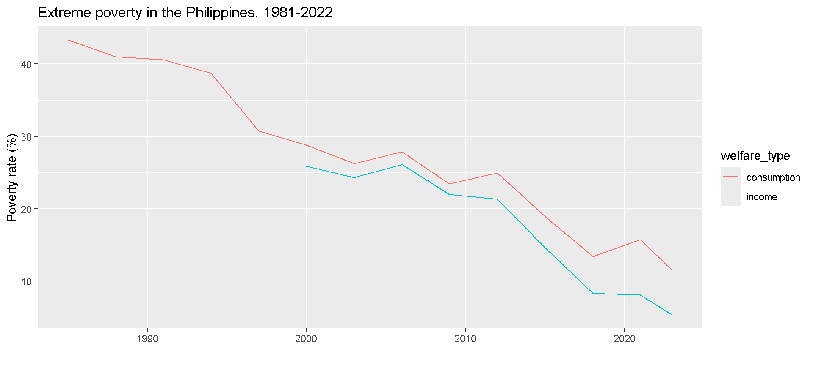
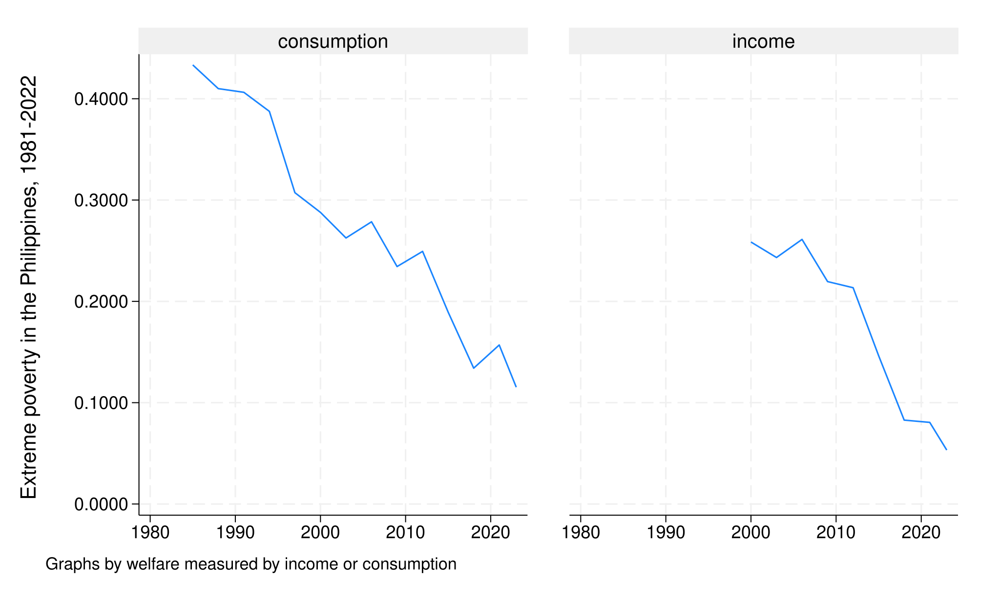
Poverty by reporting level
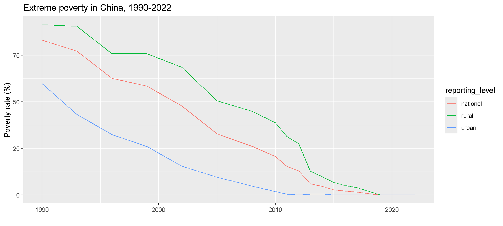
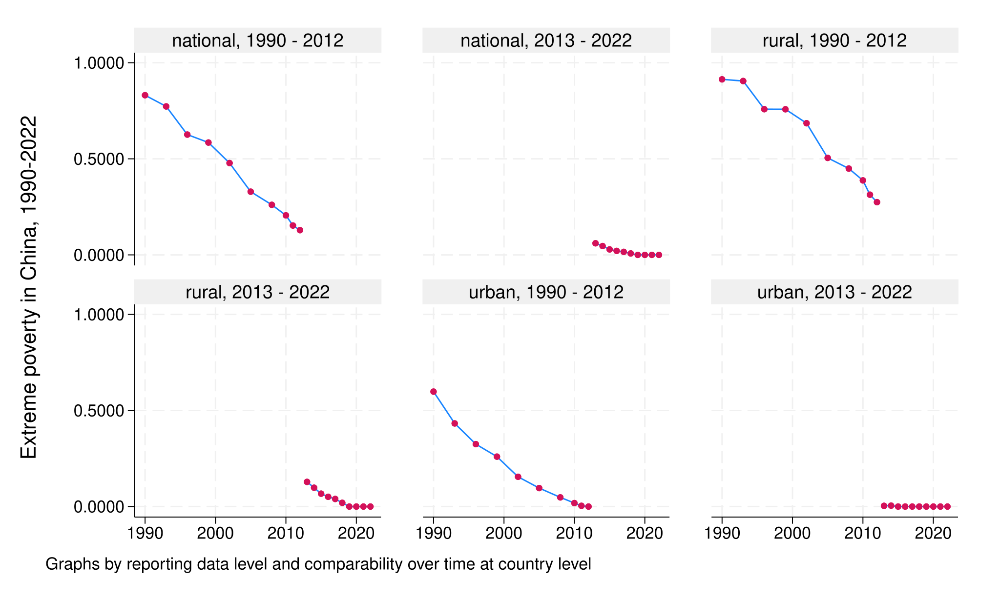
Within-country comparability
# A tibble: 20 × 4
year headcount comparable_spell welfare_type
<dbl> <dbl> <chr> <chr>
1 1990 0.831 1990 - 2012 consumption
2 1993 0.773 1990 - 2012 consumption
3 1996 0.626 1990 - 2012 consumption
4 1999 0.585 1990 - 2012 consumption
5 2002 0.478 1990 - 2012 consumption
6 2005 0.329 1990 - 2012 consumption
7 2008 0.261 1990 - 2012 consumption
8 2010 0.206 1990 - 2012 consumption
9 2011 0.153 1990 - 2012 consumption
10 2012 0.129 1990 - 2012 consumption
11 2013 0.0604 2013 - 2022 consumption
12 2014 0.0461 2013 - 2022 consumption
13 2015 0.0286 2013 - 2022 consumption
14 2016 0.0209 2013 - 2022 consumption
15 2017 0.0157 2013 - 2022 consumption
16 2018 0.00750 2013 - 2022 consumption
17 2019 0 2013 - 2022 consumption
18 2020 0 2013 - 2022 consumption
19 2021 0 2013 - 2022 consumption
20 2022 0 2013 - 2022 consumption (40 observations deleted)
+-------------------------------------------------------------------+
| count~me report~l year headco~t comparabl~l welfare_~pe |
|-------------------------------------------------------------------|
1. | China national 1990 0.8311 1990 - 2012 consumption |
2. | China national 1993 0.7728 1990 - 2012 consumption |
3. | China national 1996 0.6262 1990 - 2012 consumption |
4. | China national 1999 0.5847 1990 - 2012 consumption |
5. | China national 2002 0.4779 1990 - 2012 consumption |
|-------------------------------------------------------------------|
6. | China national 2005 0.3291 1990 - 2012 consumption |
7. | China national 2008 0.2606 1990 - 2012 consumption |
8. | China national 2010 0.2058 1990 - 2012 consumption |
9. | China national 2011 0.1529 1990 - 2012 consumption |
10. | China national 2012 0.1288 1990 - 2012 consumption |
|-------------------------------------------------------------------|
11. | China national 2013 0.0604 2013 - 2022 consumption |
12. | China national 2014 0.0461 2013 - 2022 consumption |
13. | China national 2015 0.0286 2013 - 2022 consumption |
14. | China national 2016 0.0209 2013 - 2022 consumption |
15. | China national 2017 0.0157 2013 - 2022 consumption |
|-------------------------------------------------------------------|
16. | China national 2018 0.0075 2013 - 2022 consumption |
17. | China national 2019 0.0000 2013 - 2022 consumption |
18. | China national 2020 0.0000 2013 - 2022 consumption |
19. | China national 2021 0.0000 2013 - 2022 consumption |
20. | China national 2022 0.0000 2013 - 2022 consumption |
+-------------------------------------------------------------------+Comparability over time
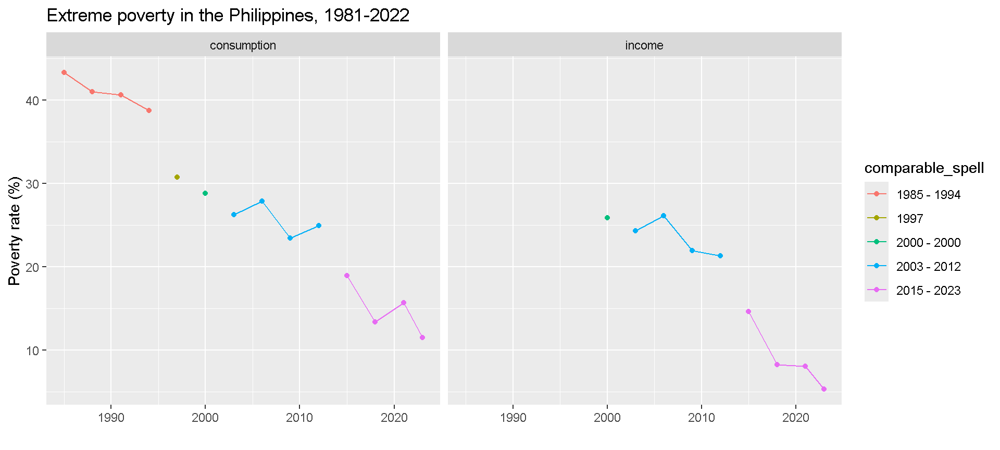
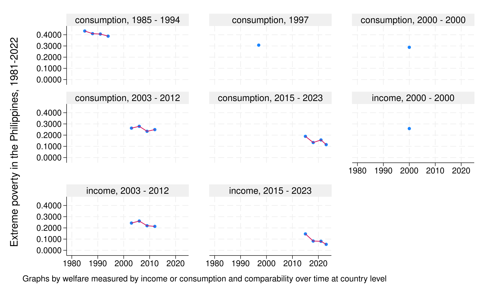
Data on Shared Prosperity and inequality
The World Bank recently adopted the Prosperity Gap to capture shared prosperity.
The Prosperity Gap is a average societal shortfall from a prosperity standard, currently set at $28/day in 2021 PPP. The threshold is close to the income levels of individuals living in middle income countries that is transitioning into high income status.
The data on Prosperity Gap and inequality measures are available in both the R and Stata output.
Data on Shared Prosperity and inequality
# A tibble: 3 × 4
country_code year gini pg
<chr> <dbl> <dbl> <dbl>
1 GHA 1987 0.353 17.9
2 GHA 1988 0.360 17.5
3 GHA 1991 0.384 20.0 | count~de year gini pg |
|--------------------------------------|
1. | GHA 1987 0.3535 17.87457 |
2. | GHA 1988 0.3599 17.467325 |
3. | GHA 1991 0.3843 19.958958 |
+--------------------------------------+Data from LIS
# A tibble: 29 × 2
country_name obs
<chr> <int>
1 United States 62
2 United Kingdom 54
3 Canada 46
4 Germany 32
5 Israel 26
6 Luxembourg 18
7 Italy 17
8 Taiwan, China 16
9 Australia 13
10 Japan 13
11 France 12
12 Korea, Rep. 11
13 Spain 11
14 Sweden 8
15 Austria 7
16 Belgium 6
17 Ireland 6
18 Netherlands 5
19 Norway 5
20 Switzerland 5
21 Denmark 4
22 Finland 4
23 Poland 4
24 Czechia 3
25 Greece 3
26 Hungary 3
27 Romania 2
28 Slovak Republic 2
29 Slovenia 2(2,184 observations deleted)
country/economy name | Freq. Percent Cum.
-------------------------------+-----------------------------------
Australia | 13 3.25 3.25
Austria | 7 1.75 5.00
Belgium | 6 1.50 6.50
Canada | 46 11.50 18.00
Czechia | 3 0.75 18.75
Denmark | 4 1.00 19.75
Finland | 4 1.00 20.75
France | 12 3.00 23.75
Germany | 32 8.00 31.75
Greece | 3 0.75 32.50
Hungary | 3 0.75 33.25
Ireland | 6 1.50 34.75
Israel | 26 6.50 41.25
Italy | 17 4.25 45.50
Japan | 13 3.25 48.75
Korea, Rep. | 11 2.75 51.50
Luxembourg | 18 4.50 56.00
Netherlands | 5 1.25 57.25
Norway | 5 1.25 58.50
Poland | 4 1.00 59.50
Romania | 2 0.50 60.00
Slovak Republic | 2 0.50 60.50
Slovenia | 2 0.50 61.00
Spain | 11 2.75 63.75
Sweden | 8 2.00 65.75
Switzerland | 5 1.25 67.00
Taiwan, China | 16 4.00 71.00
United Kingdom | 54 13.50 84.50
United States | 62 15.50 100.00
-------------------------------+-----------------------------------
Total | 400 100.00Global and regional estimates
# A tibble: 460 × 14
region_code region_name year poverty_line pop headcount poverty_gap
<chr> <chr> <dbl> <dbl> <dbl> <dbl> <dbl>
1 AFE Eastern and Sout… 1981 3 2.38e8 0.597 0.279
2 AFE Eastern and Sout… 1982 3 2.46e8 0.599 0.282
3 AFE Eastern and Sout… 1983 3 2.54e8 0.606 0.289
4 AFE Eastern and Sout… 1984 3 2.61e8 0.615 0.295
5 AFE Eastern and Sout… 1985 3 2.69e8 0.623 0.300
6 AFE Eastern and Sout… 1986 3 2.78e8 0.618 0.296
7 AFE Eastern and Sout… 1987 3 2.86e8 0.611 0.293
8 AFE Eastern and Sout… 1988 3 2.94e8 0.611 0.293
9 AFE Eastern and Sout… 1989 3 3.03e8 0.609 0.290
10 AFE Eastern and Sout… 1990 3 3.12e8 0.616 0.295
# ℹ 450 more rows
# ℹ 7 more variables: poverty_severity <dbl>, watts <dbl>, mean <dbl>,
# spr <dbl>, pg <dbl>, pop_in_poverty <dbl>, estimate_type <chr>version in use 20260324_2021_01_02_PROD
first observation
+---------------------------------------------------------+
| region_code year poverty_line headcount mean |
|---------------------------------------------------------|
| WLD 1981 3.00 0.4711 11.8277 |
+---------------------------------------------------------+
Click here to display how to cite`"EAS"' `"ECS"' `"LCN"' `"MEA"' `"NAC"' `"SAS"' `"SSF"' `"WLD"'Global poverty, 1990-2022
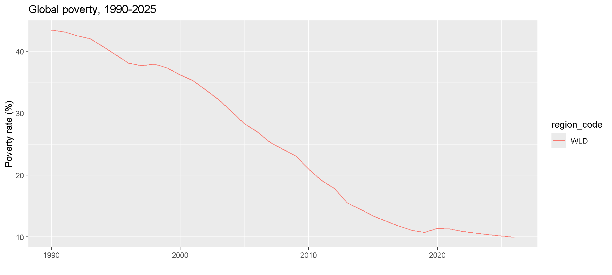
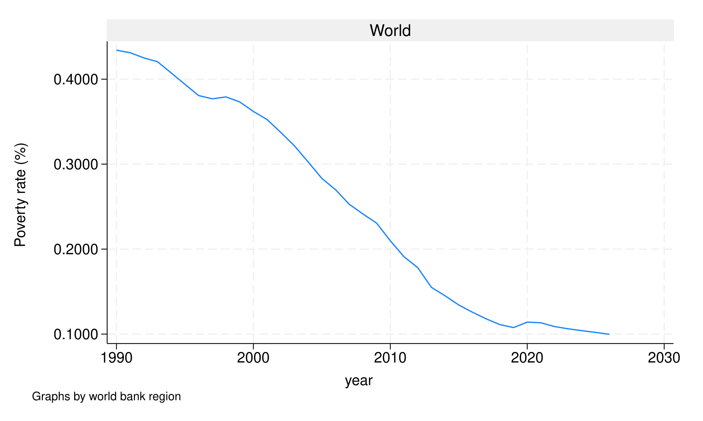
Many more functions
[1] "call_aux" "change_grouped_stats_to_csv"
[3] "check_api" "datt_rural"
[5] "datt_urban" "delete_cache"
[7] "display_aux" "get_agg"
[9] "get_aux" "get_cache_info"
[11] "get_cp" "get_cp_ki"
[13] "get_gd" "get_pip_info"
[15] "get_stats" "get_versions"
[17] "get_wb" version in use 20260324_2021_01_02_PROD
Auxiliary tables available for :
01 | aux_versions
02 | countries
03 | country_coverage
04 | country_list
05 | cpi
06 | decomposition
07 | dictionary
08 | framework
09 | gdp
10 | incgrp_coverage
11 | indicators
12 | interpolated_means
13 | metaregion
14 | missing_data
15 | pce
16 | pg_lnp
17 | pg_svy
18 | pop
19 | pop_region
20 | poverty_lines
21 | ppp
22 | region_coverage
23 | regions
24 | spr_lnp
25 | spr_svy
26 | survey_means4. Exercises
Exercise 1
Explore whether Kuznets’ inverse-U hypothesis holds with data in PIP
Plot the relationship between an inequality metric and log mean welfare
Regress an inequality metric on a 2nd order polynomial of log mean welfare
Results
Call:
lm(formula = gini ~ log(mean) + I(log(mean)^2), data = df)
Residuals:
Min 1Q Median 3Q Max
-0.200072 -0.052464 -0.009036 0.045227 0.307608
Coefficients:
Estimate Std. Error t value Pr(>|t|)
(Intercept) 0.322785 0.011533 27.989 <2e-16 ***
log(mean) 0.078876 0.008691 9.075 <2e-16 ***
I(log(mean)^2) -0.019365 0.001542 -12.557 <2e-16 ***
---
Signif. codes: 0 '***' 0.001 '**' 0.01 '*' 0.05 '.' 0.1 ' ' 1
Residual standard error: 0.07955 on 2581 degrees of freedom
Multiple R-squared: 0.1495, Adjusted R-squared: 0.1488
F-statistic: 226.8 on 2 and 2581 DF, p-value: < 2.2e-16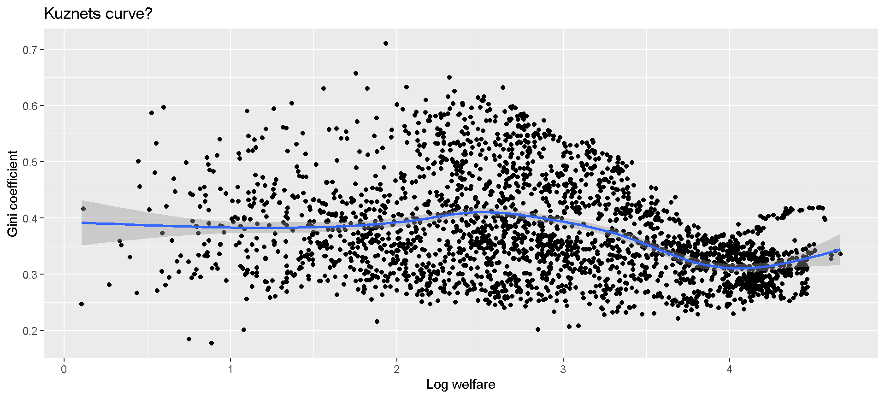
Source | SS df MS Number of obs = 2,584
-------------+---------------------------------- F(2, 2581) = 226.80
Model | 2.87042776 2 1.43521388 Prob > F = 0.0000
Residual | 16.3328866 2,581 .006328123 R-squared = 0.1495
-------------+---------------------------------- Adj R-squared = 0.1488
Total | 19.2033144 2,583 .0074345 Root MSE = .07955
------------------------------------------------------------------------------
gini | Coefficient Std. err. t P>|t| [95% conf. interval]
-------------+----------------------------------------------------------------
logmean | .0788755 .0086913 9.08 0.000 .0618329 .0959181
logmean2 | -.0193649 .0015422 -12.56 0.000 -.0223889 -.0163409
_cons | .3227849 .0115326 27.99 0.000 .3001707 .3453991
------------------------------------------------------------------------------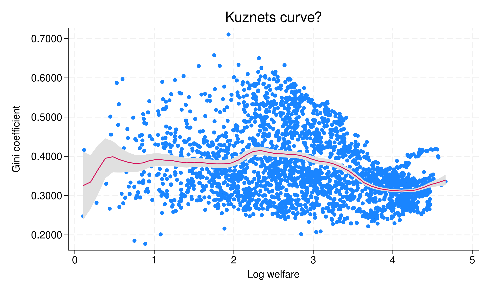
Exercise 2
COVID-19 impact on poverty and inequality
Calculate and plot the change in millions of extreme poor by region from 2019 to 2020
(Difficult) Calculate and plot the changes in Gini observed from 2019 to 2020 for countries with comparable data during these two years
Results (part 1)
# Change in number of poor, 2019-2020
df <- get_wb() |> filter(year == 2019 | year == 2020) |>
group_by(region_code) |>
mutate(changeinpoor = pop_in_poverty - lag(pop_in_poverty)) |>
filter(!is.na(changeinpoor))
gr <- ggplot(df, aes(y = region_name, x = changeinpoor/10^6)) +
geom_bar(stat = "identity") +
labs(title = "Change in number of poor, 2019-2020", x = "Milllions", y = "Region")
gr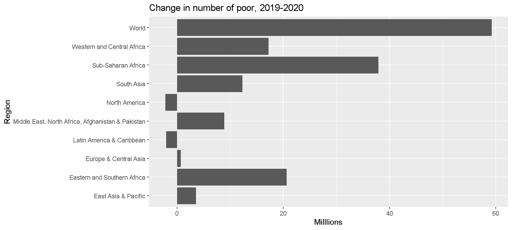
* Without the nowcast option, data will only be presented for regions with sufficient data coverage
pip wb, nowcasts clear
keep if year==2019 | year==2020
bysort region_code (year): gen changeinpoor = (pop_in_poverty-pop_in_poverty[_n-1])/10^6
keep if year==2020
graph hbar changeinpoor, over(region_code, sort(changeinpoor)) ytitle("Millions") title("Change in number of poor, 2019-2020") yline(0)
graph export "img/ex_2a_plot.svg", replace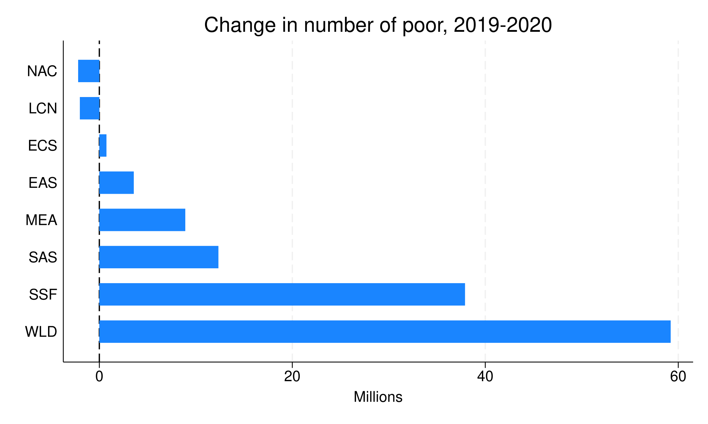
Results (part 2)
# Change in Gini, 2019-2020?
df <- get_stats() |>
filter(year == 2019 | year == 2020) |>
filter(reporting_level == "national") |>
group_by(country_code, welfare_type, comparable_spell) |>
# Only keeps countries with comparable estimates in 2019 and 2020
filter(n() == 2) |>
mutate(ginichange = gini - lag(gini)) |>
filter(year == 2020) |>
ungroup() |>
# If countries have both income and consumption estimates, use only the latter
group_by(country_code) |>
filter(n() == 1 | welfare_type == "consumption") |>
ungroup()
gr <- ggplot(df[df$country_code != "XKX",], aes(x = reorder(country_name, +ginichange), y = ginichange*100, fill = region_name)) +
geom_bar(stat = "identity") +
labs(title = "Change in Gini index, 2019-2020", y = "Gini points", x = "Country") +
theme(axis.text.x = element_text(angle = 90, vjust = 0.5, hjust = 1))
gr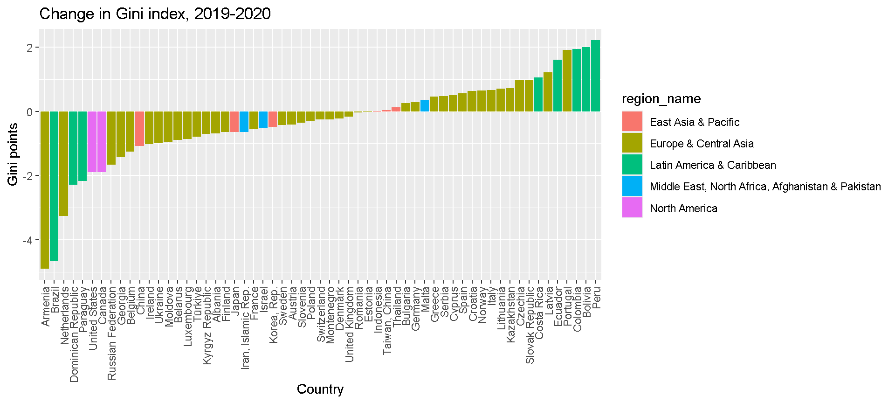
pip, year(2019/2020) coverage(national)
*Only keep countries with comparable estimates in 2019 and 2020:
bysort country_code welfare_type comparable_spell: keep if _N==2
bysort country_code welfare_type comparable_spell (year): gen ginichange = gini-gini[_n-1]
keep if year==2020
*If countries have both income and consumption estimates, use only the latter:
bysort country_code: keep if _N==1 | welfare_type==1
*Something strange is going on with Kosovo:
drop if country_code=="XKX"
*Draw graph
graph bar ginichange, over(country_name, sort(ginichange) gap(0) lab(angle(90) labsize(small))) ///
title("Change in Gini index, 2019-2020") ytitle("Gini points")
graph export "img/ex_2b_plot.svg", replace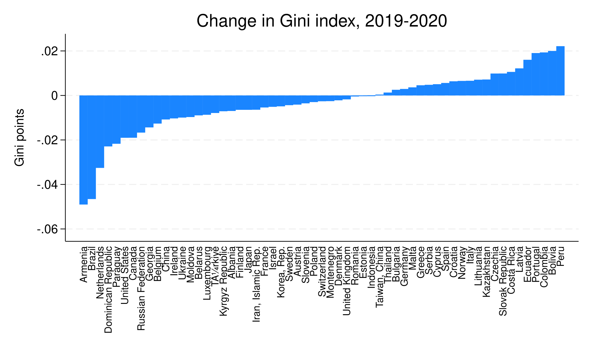
5. Additional resources
Methodological handbook: Describes all methodological details behind the estimates
Poverty & Inequality Briefs: 2-page summary of poverty and inequality in almost every developing country
Survey percentiles: 100 percentiles of each country-year survey distribution
Lined-up percentiles distribution: 1000 points on the global distribution
Acknowledgment
The findings, interpretations, and conclusions expressed in this presentation are entirely those of the author. They do not necessarily represent the views of the World Bank and its affiliated organizations, or those of the Executive Directors of the World Banks or the governments they represent.
The authors gratefully acknowledge financial support from the UK government through the Data and Evidence for Tackling Extreme Poverty (DEEP) Research Programme.
Thank you for listening!
For further details please contact:
- Diana C. Garcia Rojas: dgarciarojas@worldbank.org
- Zander Prinsloo: zprinsloo@worldbank.org
- Rossana Tatulli: rtatulli@worldbank.org
- Nishant Yonzan: nyonzan@worldbank.org